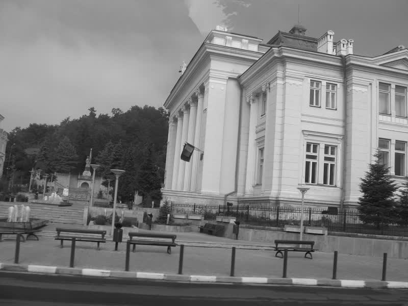

Rezultate
În cifre
Am găsit 864 de valuri de procese identice, cu 86.815 dosare deschise separat de oameni cu aceeași problemă. Și 214 acțiuni colective, dintre care 17 confirmate.
Date din portal.just.ro, actualizate la .
Cele mai mari valuri de procese

Un val înseamnă sute de oameni care dau în judecată, fiecare separat, aceeași instituție pentru aceeași problemă. Apasă pe un rând ca să vezi instanțele și perioada. Numărul de procese nu arată cine are dreptate: decide instanța, iar mulți pârâți câștigă. Cum găsim valurile.
- Se încarcă valurile…
Acțiuni colective
Procese pornite de o asociație sau un ONG în numele unui grup: consumatori, clauze abuzive bancare, mediu. Fiecare dosar primește un scor după cine e reclamantul, câți reclamanți sunt și ce cer. „Confirmat” înseamnă cel puțin 70 de puncte din 100, „De verificat” între 40 și 69. Cum calculăm scorul.
- Se încarcă acțiunile colective…
Cum folosești site-ul
Cauți firma.
Numele băncii, al asigurătorului, al dezvoltatorului sau al Casei de Pensii care ți-a făcut nedreptatea.
Vezi câți sunteți.
Fiecare val arată câte dosare identice există, la ce instanțe și din ce perioadă.
Verifici dosarul.
Numerele de dosar te duc pe portal.just.ro, sursa oficială a instanțelor.
Mergi mai departe.
Cu un avocat, cu o asociație de consumatori sau cu ceilalți păgubiți din același val.
- Sursa web service-ul public portal.just.ro
- Actualizare automată, de două ori pe săptămână
- Cod deschis, pe GitHub
- Criterii cum alegem procesele
- Date personale cum le tratăm
De unde vin datele
Un program citește săptămânal registrul public al instanțelor, sortează dosarele după semnale obiective și găsește singur firmele acționate în masă. Fiecare clasificare are motivele ei.
Informația e orientativă, nu consultanță juridică, iar clasificarea automată poate greși. Un proces nu dovedește vina pârâtului. Verifică orice dosar la portal.just.ro. Persoanele fizice apar doar cu inițiale; dacă apari într-un dosar, îl poți scoate de pe site.